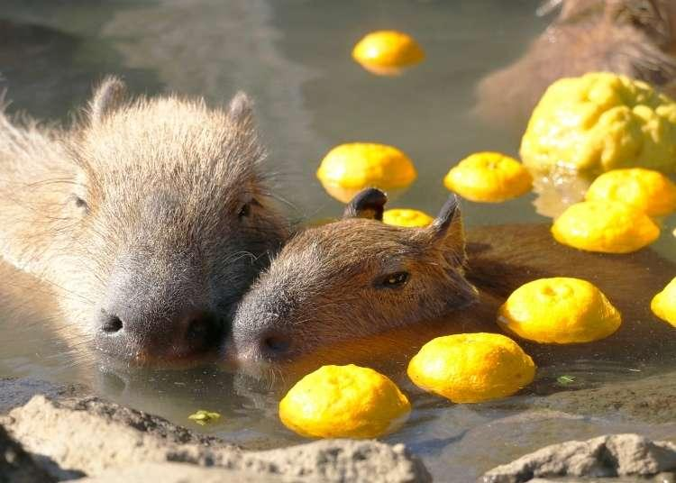

카피바라는 세계에서 가장 큰 설치류로남아메리카의 강과 습지 주변에 서식하는 온순한 동물이다. 몸길이는 약 1~1.3m, 몸무게는 35~60kg 정도로 크기가 상당히 크며, 짧은 다리와 둥근 얼굴, 그리고 물갈퀴가 있는 발이 특징이다. 이러한 신체 구조 덕분에 수영을 매우 잘하며, 물속에서 포식자를 피하는 능력도 뛰어나다.

카피바라는 매우 사회적인 동물로, 보통 10마리에서 많게는 20마리 이상이 함께 무리를 이루어 생활한다. 성격이 온순하고 공격성이 거의 없어 다른 동물들과도 잘 어울리는 것으로 유명하며, 심지어 원숭이나 새가 등에 올라타는 모습도 자주 관찰된다. 이러한 특성 때문에 ‘세상에서 가장 친화적인 동물’이라는 별명을 갖고 있다.
또한 카피바라는 초식동물로 주로 풀과 수생 식물을 먹으며, 하루 중 더운 시간에는 물속에서 쉬고 비교적 선선한 시간에 활동하는 습성이 있다. 최근에는 독특한 외모와 온순한 성격 덕분에 전 세계적으로 많은 사람들에게 사랑받고 있으며, 특히 일본에서는 온천에 들어가는 모습으로 큰 인기를 끌기도 했다.